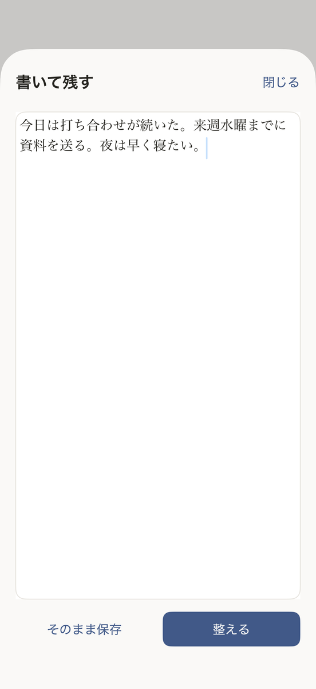

Talk or type. Ask your past self.
Himotoku is an iPhone diary app: talk or type and it becomes a page, and you can ask your past self questions that come with cited sources. Your diary stays only on your device and is never used to train AI.
For people who don't have time to write, and for people with paper diaries tucked away somewhere.
Ask your past self
Ask your pages in plain words. Answers cite the day they came from and never invent what isn't written. "When did I decide that?" "What was I doing this time last year?" — if your diary doesn't say, Himotoku says so.

Talk for 90 seconds
Say what happened today. It is transcribed on this iPhone and organized into a readable diary page. No typing, no willpower needed.

To-dos with one tap
When to-dos and plans are found, add them to Reminders and Calendar. Nothing is added unless you tap.

Talk or type
On days you would rather write, type it. Keep the text as written, or have it organized the same way, with to-dos and plans picked out.

Bring in paper diaries
Photograph years of paper diaries. Whatever can be read becomes searchable in your timeline. The original photos stay with the page.

Stays on this iPhone
Your diary is never stored on the developer's servers. It is never used to train AI. Your voice never leaves the device; speech is transcribed on this iPhone. Only when organizing an entry or answering a question, the text for that one step is sent to Microsoft's servers (Japan region). See the Privacy Policy for details.

Pricing
Free: recording, transcription, AI organizing (up to 45 a month), timeline, word search, paper import, and export. Your first 3 questions to your past are free.
Plus ($6.99 / month, 7-day free trial — US price; local price shown in the App Store): questions to your past and search by meaning, with no monthly limit on recording and organizing. Renews automatically once the trial ends; cancel during the trial and you pay nothing. Recording, organizing and export stay free even without Plus.
Frequently asked questions
What can I do for free?
Recording, transcription, AI organizing (up to 45 a month), timeline, word search, paper import, and export are all free. Your first 3 questions to your past are free too.
How does pricing and cancellation work?
Plus is $6.99 a month (US price; your local price is shown in the App Store), with a 7-day free trial. It renews automatically once the trial ends. Cancel during the trial and you pay nothing. Manage or cancel anytime from iOS Settings > Subscriptions. Recording, organizing and export stay free even without Plus.
Where is my data stored?
Your diary is never stored on the developer's servers — there's no database to store it in. When you organize an entry or ask a question, that text is sent to Microsoft's Azure OpenAI service (Japan region) for processing, and may be kept there for up to 30 days for abuse monitoring. It's never used to train AI.
Does my voice get sent anywhere?
No. Your voice never leaves the device. Speech is transcribed on this iPhone.
How accurate is paper diary import?
Whatever can be read becomes searchable in your timeline. Some handwriting, especially cursive or faded ink, may not be read correctly. The original photo is always kept alongside the page.
What languages and devices are supported?
iPhone with iOS 17 or later. Japanese and English.
What happens if I ask about something not in my diary?
Himotoku says it can't find that record and points you to nearby pages instead. It doesn't answer as if something were written when it wasn't.
Can I export my diary?
Yes, anytime, as Markdown and audio. The exported files open in other apps too.